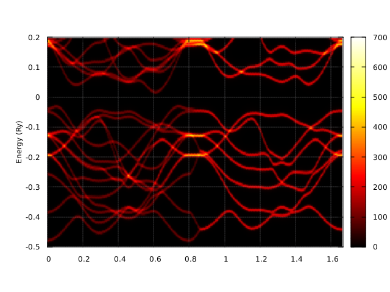

Akai-KKR¶
makefile
# ThecCommand invoking the fortran compiler of the
# system should be specified by "fort= ".
# The corresponding compiler option also should be given
# by "flag= ".
#
.PHONY: all
# If openMP is not supported two lines for omp should be
# replaced by
#omp =
#nomp =
#
#######################################
# Intel compiler used
# In the case of ifort 16.0.0 or later
#######################################
#fort = ifort
#flag = -O2 -mcmodel=medium
#omp = -qopenmp
#nomp = -qopenmp-stubs
#
#######################################
# Intel compiler used
# In the case of ifort 15.x.x or ealier
#######################################
fort = mpif90
flag = -O2 -mcmodel=medium
flag = -mp1 -i-dynamic -mcmodel=medium
# use openmp for old version of ifort
omp = -openmp
nomp = -openmp-stubs
#
#######################################
# GNU Fortran compiler used
# In the case of gfortran
#######################################
#fort = gfortran
#flag = -O2
#omp = -fopenmp
#nomp =
#
program = specx
#all: $(program) gpd spc
objs = \
source/$(program).o \
source/spmain.o \
source/alphac.o \
source/asymbl.o \
source/atmcor.o \
source/atmicv.o \
source/atmmas.o \
source/atmnum.o \
source/atmrot.o \
source/aveari.o \
source/avearr.o \
source/banden.o \
source/biomix.o \
source/bravai.o \
source/brintg.o \
source/brvsym.o \
source/bzmesh.o \
source/bzmrot.o \
source/bzmsmb.o \
source/bzvrtx.o \
source/cdrlud.o \
source/cemesh.o \
source/cemesr.o \
source/cg.o \
source/cgc.o \
source/cgntcd.o \
source/cgntcs.o \
source/cgnwt.o \
source/cgtabl.o \
source/chebpc.o \
source/chkcnf.o \
source/chklat.o \
source/chktyp.o \
source/chleng.o \
source/chrasa.o \
source/chrdnc.o \
source/cinvrn.o \
source/cinvrx.o \
source/ckmesh.o \
source/clrarc.o \
source/clrari.o \
source/clrarr.o \
source/clubks.o \
source/cludcm.o \
source/cnsole.o \
source/corada.o \
source/corcnf.o \
source/corgga.o \
source/corlsd.o \
source/cpaitr.o \
source/cpolin.o \
source/cprinv.o \
source/cpshft.o \
source/crtint.o \
source/cryrho.o \
source/cstatc.o \
source/cstate.o \
source/cubmtr.o \
source/dawson.o \
source/diffn.o \
source/dplini.o \
source/drivtv.o \
source/drvlud.o \
source/drvmsh.o \
source/dsenum.o \
source/dspcpa.o \
source/dspgm.o \
source/equarc.o \
source/equari.o \
source/equarr.o \
source/eqvlat.o \
source/eranlb.o \
source/erfc.o \
source/erranc.o \
source/errtrp.o \
source/etaopt.o \
source/excev.o \
source/excg91.o \
source/excgga.o \
source/exclmm.o \
source/excmjw.o \
source/excpbe.o \
source/excpym.o \
source/excpyv.o \
source/excvbh.o \
source/excvwn.o \
source/exgga.o \
source/extorg.o \
source/fczero.o \
source/fd2ini.o \
source/fd3.o \
source/finitn.o \
source/fintgr.o \
source/fldf.o \
source/fxspin.o \
source/gcor.o \
source/gengpt.o \
source/genrpt.o \
source/gensm.o \
source/getdtb.o \
source/getfil.o \
source/getnum.o \
source/getorg.o \
source/getrtm.o \
source/gettmp.o \
source/gmtrns.o \
source/gnpset.o \
source/gntcds.o \
source/gntcs.o \
source/gpsort.o \
source/green.o \
source/gsdatp.o \
source/gtchst.o \
source/guesse.o \
source/guessz.o \
source/hexmtr.o \
source/hypera.o \
source/ibrava.o \
source/ifkey.o \
source/inijip.o \
source/inqbrv.o \
source/julday.o \
source/kkrsed.o \
source/laguer.o \
source/lftfil.o \
source/lindx.o \
source/lsqftr.o \
source/lubksb.o \
source/ludcmp.o \
source/lwcase.o \
source/madlng.o \
source/mdbsl.o \
source/mdexp2.o \
source/mkemap.o \
source/mseque.o \
source/mshatm.o \
source/nesbet.o \
source/neutrl.o \
source/nfqlty.o \
source/numcor.o \
source/phasea.o \
source/phaseb.o \
source/poisna.o \
source/poisnb.o \
source/polin0.o \
source/polint.o \
source/potenv.o \
source/prdmtc.o \
source/prdmtr.o \
source/prdrtm.o \
source/prmvec.o \
source/prntcs.o \
source/prntpn.o \
source/pyexch.o \
source/qromo2.o \
source/qvolum.o \
source/radial.o \
source/radnrl.o \
source/ratin0.o \
source/redata.o \
source/readin.o \
source/readk.o \
source/realh.o \
source/reduce.o \
source/relred.o \
source/rlubks.o \
source/rludcm.o \
source/rmesha.o \
source/rmserb.o \
source/rmserr.o \
source/rndkpt.o \
source/rotatm.o \
source/rrcnv.o \
source/rsymeq.o \
source/sbrnch.o \
source/sbtime.o \
source/setarc.o \
source/setari.o \
source/setarr.o \
source/setomp.o \
source/spckkr.o \
source/srtrns.o \
source/stfact.o \
source/subscr.o \
source/swpari.o \
source/swparr.o \
source/tchmta.o \
source/tchstr.o \
source/tfp.o \
source/totalw.o \
source/transp.o \
source/ty2ity.o \
source/uclock.o \
source/udate.o \
source/utimer.o \
source/uutrns.o \
source/uxcor.o \
source/viomix.o \
source/vrotat.o \
source/vwncor.o \
source/wgnstz.o \
source/wrtspc.o \
source/xtoken.o \
source/zroots.o
$(program): $(objs)
@$(fort) -o $@ $(flag) $(omp) $(objs) $(libs)
source/specx.o: source/specx.f
$(fort) $(flag) -o $(<:.f=.o) -c $<
.f.o:
$(fort) $(flag) $(omp) -o $(<:.f=.o) -c $<
gpd: source/gpd.f
$(fort) $(flag) $(omp) -o $@ $<
spc: source/spc.f
$(fort) $(flag) $(omp) -o $@ $<
in/wse2
c--------------------WSe2------------------------------------
go data/WSe2
c------------------------------------------------------------
c brvtyp a c/a b/a alpha beta gamma
hex 6.2021, 3.9488, , , , ,
c------------------------------------------------------------
c edelt ewidth reltyp sdftyp magtyp record
0.001 1.5 sra mjw nmag 2nd
c------------------------------------------------------------
c outtyp bzqlty maxitr pmix
update 4 200 0.02
c------------------------------------------------------------
c ntyp
2
c------------------------------------------------------------
c type ncmp rmt field mxl anclr conc
W 1 1 0 2 74 100
Se 1 1 0 2 34 100
c------------------------------------------------------------
c natm
6
c------------------------------------------------------------
c atmicx atmtyp
1/3a 2/3b 1/4c W
2/3a 1/3b 3/4c W
1/3a 2/3b 0.6211c Se
2/3a 1/3b 0.3789c Se
2/3a 1/3b 0.1211c Se
1/3a 2/3b 0.8789c Se
c------------------------------------------------------------
in/wse2_spc
c--------------------WSe2------------------------------------
spc data/WSe2
c------------------------------------------------------------
c brvtyp a c/a b/a alpha beta gamma
hex 6.2021, 3.9488, , , , ,
c------------------------------------------------------------
c edelt ewidth reltyp sdftyp magtyp record
0.001 0.9 sra mjw nmag 2nd
c------------------------------------------------------------
c outtyp bzqlty maxitr pmix
update 8 200 0.02
c------------------------------------------------------------
c ntyp
2
c------------------------------------------------------------
c type ncmp rmt field mxl anclr conc
W 1 1 0 2 74 100
Se 1 1 0 2 34 100
c------------------------------------------------------------
c natm
6
c------------------------------------------------------------
c atmicx atmtyp
1/3a 2/3b 1/4c W
2/3a 1/3b 3/4c W
1/3a 2/3b 0.6211c Se
2/3a 1/3b 0.3789c Se
2/3a 1/3b 0.1211c Se
1/3a 2/3b 0.8789c Se
c------------------------------------------------------------
300
0.0000000 0.0000000 0.0
0.0000000 0.5773503 0.0
0.3333333 0.5773503 0.0
0.0000000 0.0000000 0.0
0.0000000 0.0000000 0.5
0.0000000 0.5773503 0.5
0.3333333 0.5773503 0.5
0.0000000 0.0000000 0.5
c------------------------------------------------------------
plot.gnu
set pm3d map
set ylabel "Energy (Ry)"
set grid
set palette rgbformulae 21,22,23
#set palette defined (0 "white", 1 "red")
set yrange [-0.5:0.2]
set xrange [0:1.67]
#set xtics ("{/Symbol G}" 0.000000, "{H}" 0.596128, "{N}" 1.017654, "{P}" 1.315717, "{/Symbol G}" 1.831979, "{N}" 2.253505 )
splot "data/WSe2_up.spc" notitle
set terminal pngcairo size 520,390
set output "wse2_up.png"
rep
#set terminal postscript enhanced color font "Arial"
#set output "fe_up.eps"
#rep
